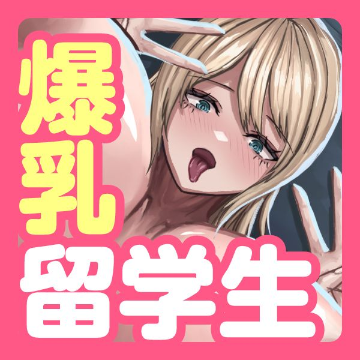
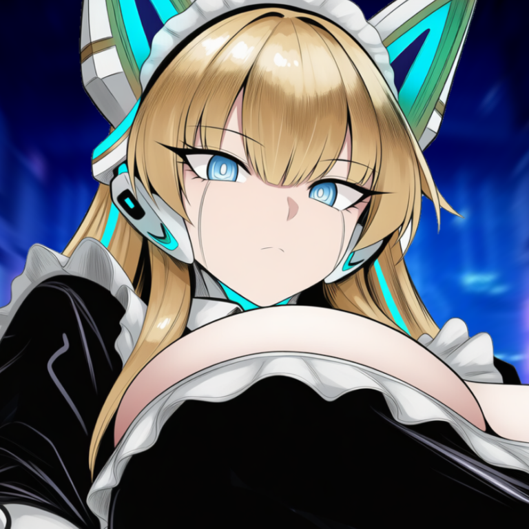

作品の中のトラックを
まとめて再生
ひとつの作品に入っている音声を、まとめて表示します。「すべて再生」で聴いたり、好きなトラックだけ選んだりできます。
再生中は画面の下にミニプレイヤーが出るので、ほかの作品を見ている間も操作できます。
音声作品を聴くための iPhone / iPad アプリ
買った音声作品を、
iPhoneでまとめて聴けます。
作品ごとに並べて、好きな声優やタグで探して。
手持ちの作品を、自分の聴きやすい形に整理できます。
無料で50トラックまで。手持ちの作品で試してみてください。
画面に表示している作品は架空のものです。
画面の画像はタップすると拡大できます。
iCloud Driveから取り込む場合の流れです。
購入した作品の音声ファイルを、iCloud Driveのフォルダに保存します。
にゃんボイスで作品のフォルダを登録して、ライブラリを更新します。作品情報がなくても、フォルダ名から読み込めます。
ライブラリに作品が並んだら、聴きたいものを開いて再生してください。
にゃんボイスは、購入済みの音声作品を整理して聴くためのプレイヤーです。作品は販売サイトなどで購入し、音声ファイルを用意してください。
iCloud Driveに作品の音声ファイルを保存し、にゃんボイスでライブラリを更新すると読み込めます。
はい。作品名・声優名・タグなどの情報（メタデータ）がなくても、フォルダ名をもとに読み込めます。作品の情報は、あとからアプリ内で編集できます。
無料プランでは、50トラックまでのクラウド再生を試せます。上限は作品数ではなく、作品に含まれるトラック数です。有料プランとの違いは料金プランをご覧ください。
有料プランのオフライン再生で聴けます。通信できる場所で、聴きたい作品をあらかじめ端末にダウンロードしておいてください。
無料プランで取り込みや再生を試してから、
使い方に合わせて選べます。
| 機能 | 無料 | 有料 |
|---|---|---|
| トラック数 | 50まで | 無制限 |
| クラウド再生 | 対応 | 対応 |
| オフライン再生 | — | 対応 |
| シークレットモード | — | 対応 |
| 複数フォルダ | — | 対応 |
上限は作品数ではなく、作品に含まれるトラックの合計です。
価格やプラン内容は変更されることがあります。最新の情報はApp Storeでご確認ください。
画像を押すと拡大できます。
画面に表示している作品は架空のものです。
作品と再生
作品の一覧、詳細、再生画面とシークレットモードです。
整理
作品やトラックの情報を整えたり、ライブラリを分けたりできます。
取り込みと保存
保存元の設定と、ダウンロード済みの作品を表示する画面です。
表示と記録
ピンク以外の表示も選べます。集計画面では再生の記録や作品数を確認できます。
にゃんボイスにご協力いただいている
サークルをご紹介します。



